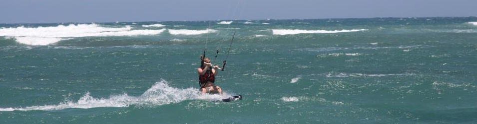

Hobbies

Snowboarding
I grew up skiing but switched to the dark side around the age of 13. I followed my passions into a winter job of a snowboard instructor. This not only allowed me to get some extra cash on the side, but to be on the mountain every day after school. I loved it. When snowboarding, my mind leaves all stresses behind. I can be in the trees, alone, and breathe the fresh air.
Kite Surfing
This is what I do when there isn't enough snow in August.
Reading
I'm a sucker for romantic novels and Harry Potter. I currently picked up an adventure tale by Nora Roberts called Stars of Fortune. My favorite book that I read in school was 1984 by George Orwell.
Making Stuff
My most recent project has been this website. But I grew up making little inventions and gadgets. I recently helped my dad build our summer house from scratch and also knit a stuffed teddy bear for my moms birthday. I love making something out of nothing.